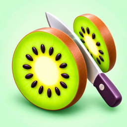

Hold the button to cut. The longer you hold, the faster the knife chops. Let go after a few cuts for clean slices, or after hundreds of cuts to watch the object crumble into thousands of pieces. Unlock new objects and knives as you go.
Questions, bugs or ideas: mahanalqaisi@gmail.com.